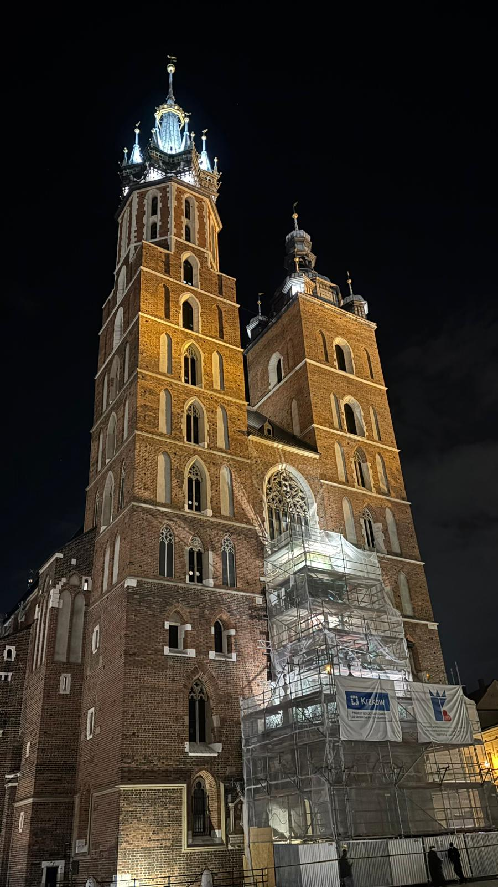
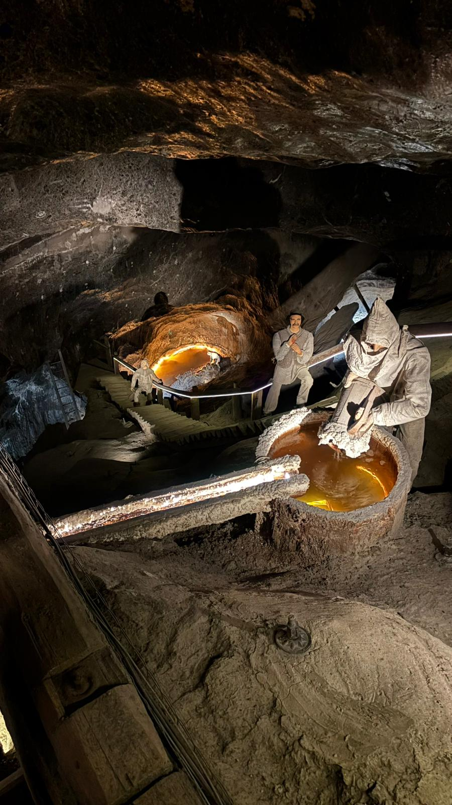

Poland
Poland was another country I visited during my Erasmus journey, and I had the chance to explore both Warsaw and Kraków. Warsaw was not really my type of city. It was filled with modern buildings, which made it feel quite different from many of the historic European cities I visited. The part I enjoyed the most was the Old Town, which had much more character and charm than the rest of the city. Kraków felt more traditional, but overall it seemed like a fairly ordinary city to me. The highlight of my visit was definitely the Wieliczka Salt Mine. It was unlike anything I had seen before, and exploring the underground chambers and sculptures made the experience very memorable. Overall, the Salt Mine was my favorite attraction in Poland and the part of the trip that left the strongest impression on me.
Photo Gallery


Cities Visited
- Warsaw
- Kraków
Favorite Place
Wieliczka Salt Mine
My Rating
6/10 ⭐